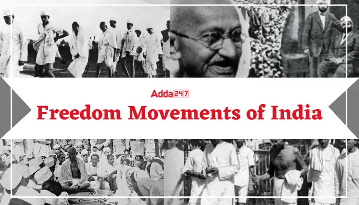

Important Indian Freedom Movements During Independence from 1857 to 1942
Indian Freedom Movements are evidence of the year-long freedom struggle of Indian people to get complete independence. The Indian Freedom Movement started in 1857.

Indian Freedom Movements
Indian Freedom Movements are evidence of the year-long freedom struggle of Indian people to get complete independence. The Indian Freedom Movement started in 1857 with the Revolt of 1857 and ended with achieving the Independence of India in 1947.
Several movements were unsuccessful however, they were powerful enough to move the roots of the British Government in India. The ultimate goal of all the freedom movements was to get complete independence from British rule.
Freedom Fighters Of India And The Revolt Of 1857
List of Indian Freedom Movements(1857-1942)
| Year |
Indian Freedom Movements |
Significance |
| 1857 |
Revolt of 1857 |
Sepoy Munity in Meerut spread to Delhi, Agra, Kanpur, and Lucknow |
| 1905 |
Swadeshi Movements |
Partition of Bengal by Lord Curzon |
| 1914 |
Gadar Movement |
Komagata Maru Incident |
| 1916 |
Home Rule Movement |
Bal Gangadhar Tikal Launched the movement with Annie Besant |
Freedom Movementss of Mahatma Gandhi from 1857 to 1914
-
Overview of Indian Freedom Movements
- The Indian freedom movements paved the way for the Independence of India after years of struggle. The Indian Freedom movements continued to strengthen the unity of the Indian people and made the British roots weak. Here is an overview of the important Indian Freedom Movements.
-
Revolt of 1857
- The Revolt of 1857 was the first war of Independence against the British. The revolt began in Meerut on 10th May 1857. The movement slowly spread to Delhi, Agra, Kanpur, and Lucknow. Though it was the first step of the fight against the British and the first Indian freedom movement, it was unsuccessful. However, it has a significant impact on the masses and inspired the sentiments of the Indian citizens to join hands for the Independence movement.
This independence movement marked the end of rule by the British East India Company which earlier had direct control over India. The revolt completely shook the foundation of British rule in India and disclosed their inefficiency in handling the Indian administration. The Government of India Act, of 1858 abolished the rule of the British East India Company. The Revolt failed due to a lack of one clear leader and no planning.
Swadeshi Movement
The Swadeshi movement was started after the announcement of Lord Curzon about the partition of Bengal in 1905. The British government declared the division of Bengal into two provinces to undermine national unity. On 7th August 1905, the Boycott resolution was adopted during the conference held at the Calcutta Town Hall.